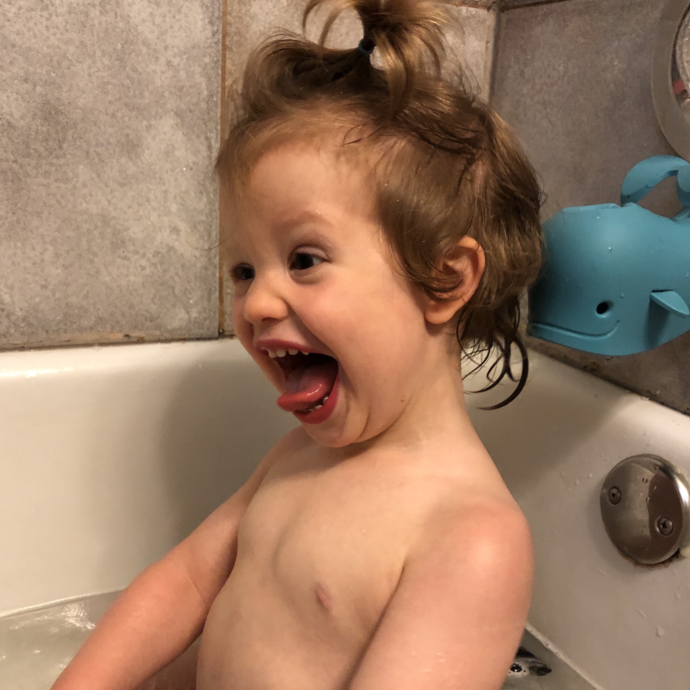

1. Have patience.

Kids can sense when you're about to lose it, inturn they feed off your energy. They also seem to strike when you are weak. Take a deep breath, you can do this! When they are out of earshot you can scream or express any frustration, until then hold it together.